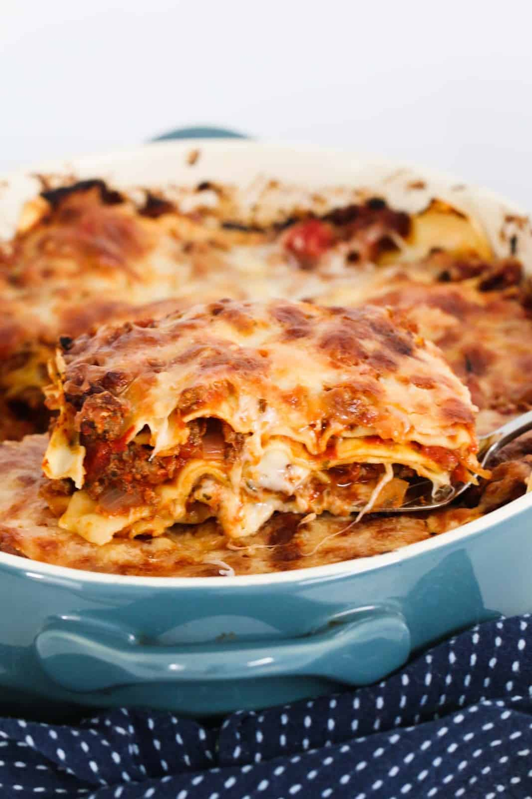

Lasagne

Description
A quick and easy beef lasagne that's extra cheesy and ready to eat in just 1 hour! And best of all, a time saver, as there's absolutely no need to make a bechamel sauce! The perfect midweek family dinner.
Ingredients
- brown onion (finely diced)
- garlic cloves (minced)
- beef mince
- tomato paste
- tinned tomatoes (diced or crushed)
- beef stock (liquid)
- dried italian herbs(eg:parsley and oregano)
- cheeses (eg:mozzarella, parmesan)
- lasagne sheets
Steps
- Sauté the onion and garlic until soft and translucent in a large pan
- Add the beef mince, breaking up the clumps with a spoon, and cook until the mince is browned
- Add the tomato paste, tomatoes, beef stock, Italian herbs and salt and pepper, and bring to a boil and then simmer (stirring occasionally) for 15 - 20 minutes
- Assemble the lasagne by adding a layer of sauce to the bottom of the prepared baking dish, and top with fresh lasagne sheets and then shredded mozzarella cheese
- Repeat the layers until you have used all of the sauce and lasagne sheets
- Finish with a layer of mozzarella cheese and add a sprinkle of grated parmesan over the top
- Bake in a preheated oven for 30-40 minutes or until cooked through and the cheese has melted and turned golden on top
- Tip: If you notice the cheese over-browning too much, add a loose sheet of foil over the top or move to a lower shelf in the oven